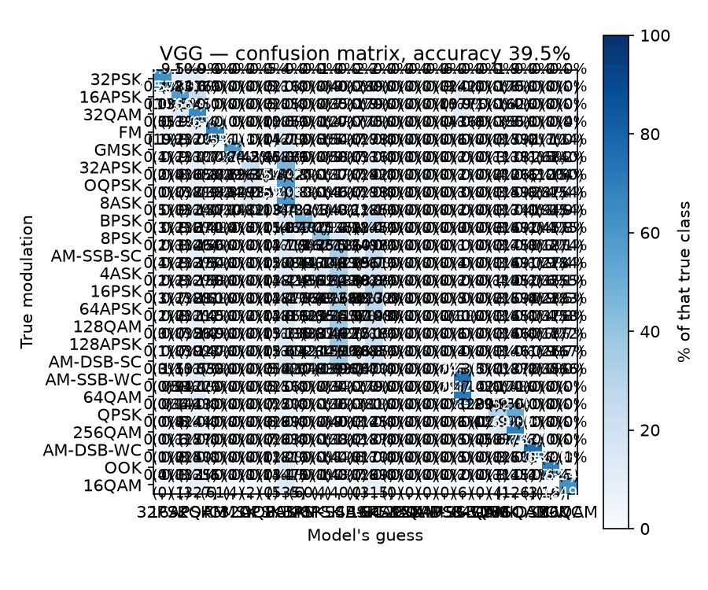
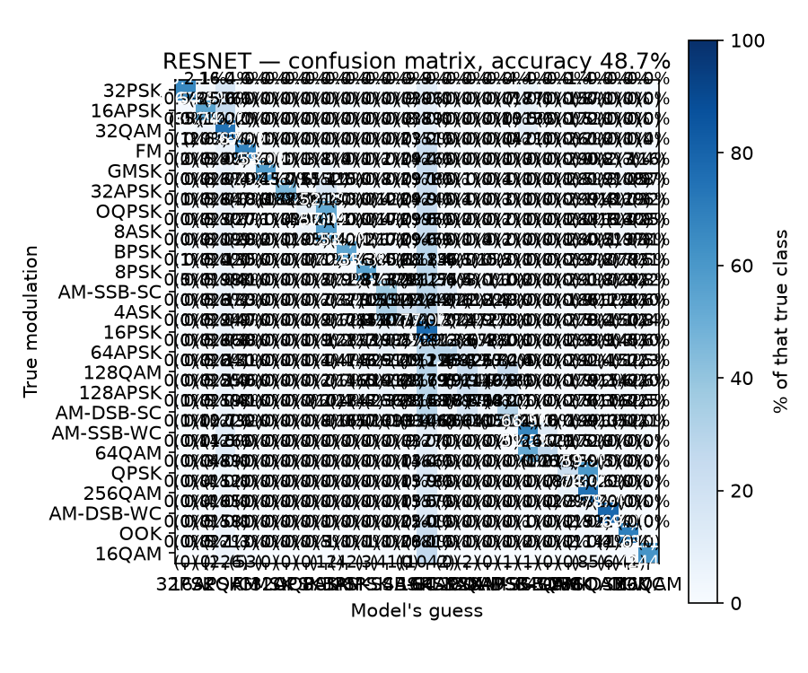

Project report · RadioML 2018.01A · Phase 3
Phases 1–2 kept finding that VGG and ResNet land within ~1% of each other. Scaling to the full 24-class problem — trained on a free Colab GPU — breaks that pattern: ResNet pulls 9.2 points ahead, and VGG completely fails to learn four classes it never once predicts.
Phase 3 of 3. The 3-class warm-up (81.1%) is in the warm-up report; the 10-class run + refuse-to-answer gate (66.3% → 90% gated) is in the scale-up report.
The headline finding: at 10 classes, architecture barely mattered — the ceiling was noise, and VGG/ResNet tied. At 24 classes, that stops being true. Four of the hardest classes (very dense, look-alike constellations) are ones VGG's plain conv stack simply never learns to predict — not once, across 16,000 test examples. ResNet's skip connections, which mainly make optimization easier rather than adding raw capacity, are the difference between "learns" and "gives up."
01 · The task
Every modulation DeepSig's RadioML 2018.01A ships: the PSK, APSK, QAM, and ASK families at every order the dataset has, plus the analog AM/FM/GMSK/OOK set from Phases 1–2. Chance accuracy drops to 1-in-24 (4.2%). Trained on 20,000 examples/class (480,000 total) — chosen to fit a ~25-minute budget on a free Colab GPU.
The laptop's 12-core CPU that handled Phases 1–2 would take hours here, so this phase moved to a free Colab T4 GPU, run through a notebook (colab/train_24class.ipynb) rather than the laptop.
02 · Results
64APSK, 128QAM, 128APSK, and AM-DSB-SC all score precision = 0.000, recall = 0.000 under VGG — the model never predicts any of them, for any of their 4,000 test examples each. Under ResNet, every one of the 24 classes gets learned to some degree; the weakest (128APSK) still reaches 11.7% recall.
| Metric | VGG | ResNet |
|---|---|---|
| All-SNR test accuracy | 39.5% | 48.7% |
| High-SNR (≥ +18 dB, paper-style) | 57.9% | 75.8% |
| Classes with zero recall | 4 of 24 | 0 of 24 |
| Confidence when correct / wrong | 0.743 / 0.246 | 0.811 / 0.269 |
03 · The garbage-can effect, concentrated
Overwhelmingly into three other classes, which absorb far more predictions than their true share:
| Sink class | Times predicted | True count | Over-prediction |
|---|---|---|---|
8ASK | 14,938 | 4,000 | 3.7× |
AM-SSB-SC | 11,061 | 4,000 | 2.8× |
16PSK | 10,413 | 4,000 | 2.6× |
Together these three classes absorb 38% of all VGG's predictions (36,412 of 96,000) despite being only 12.5% of the true examples. This is the same behaviour found in Phase 2 — where 8PSK alone absorbed noise-destroyed signals — except here it's driven by four genuinely hard-to-separate classes rather than noise, so the "garbage can" spreads across a small cluster instead of one sink.
Why these four: 64APSK, 128QAM, and 128APSK are extremely dense, high-order constellations — visually near-identical to each other and their neighbours, even without noise. AM-DSB-SC differs from Phase 2's easy anchor AM-DSB-WC only in whether the carrier is suppressed — a subtle distinction. These are the hardest pairwise confusions in the whole set, and VGG's plain feed-forward stack ran out of training budget before separating them. ResNet's skip connections — which mainly ease optimization, per the original ResNet paper, not raw capacity — turn that into "learns vs. doesn't."
04 · Confusion matrices
VGG — 24-class confusion matrix
Note the four rows with no diagonal entry, and the wide 8ASK / AM-SSB-SC / 16PSK columns

ResNet — 24-class confusion matrix
Same four hard classes are still the weakest, but each keeps a real diagonal

05 · Against the paper
| Paper element | Status |
|---|---|
| All 24 classes (full replication) | done — VGG 39.5% / ResNet 48.7% all-SNR |
| High-SNR accuracy ~98.3% (VGG) / 99.8% (ResNet) | not matched — 57.9% / 75.8% |
| Multi-class confusion structure | reproduced + extended (collapsed-class sink) |
| ResNet's real value over VGG | reproduced and strengthened at higher class count |
Why we don't match the paper's high-SNR number here — unlike Phase 2, where the 10-class high-SNR score nearly matched: the paper trains on ~106,000 examples/class; this ran on 20,000/class (a ~25-minute Colab budget). With 24 genuinely confusable classes, several needing fine detail to separate, that's not enough data to fully resolve the hardest ones. This is an honest, expected limitation, not a bug — more data and a longer budget would likely close much of the gap, extending the project's running theme: architecture matters less than data quality/quantity — except now quantity joins noise as a real constraint.
06 · Next
gate.py already generalizes; the collapsed-class problem may show up as low confidence rather than confident wrong answers.